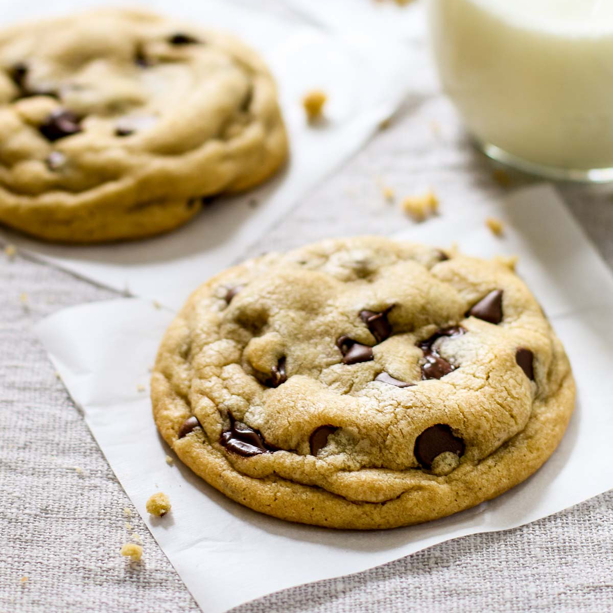

Ingredients

- 1 cup butter, softened
- 1 cup white sugar
- 1 cup packed brown sugar
- 2 eggs
- 2 teaspoons vanilla extract
- 3 cups all-purpose flour
- 1 teaspoon baking soda
- 2 teaspoons hot water
- 1/2 teaspoon salt
- 2 cups semisweet chocolate chips
Directions
- Preheat oven to 350 degrees F (175 degrees C).
- Cream together the butter, white sugar, and brown sugar until smooth.
- Beat in the eggs one at a time, then stir in the vanilla.
- Dissolve baking soda in hot water. Add to batter along with salt.
- Stir in flour and chocolate chips.
- Drop by large spoonfuls onto ungreased pans.
Video